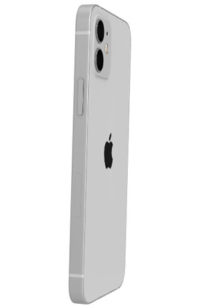
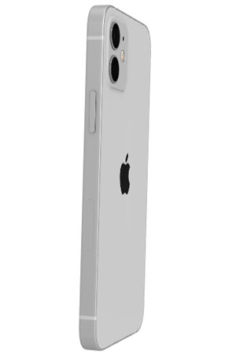

Taking over empty retail units and unusual
community spaces in your neighborhood,
Uncle Wray lines-up your favourite local
artists, DJs and Caribbean takeaways;
and turnup in true yard style!
Tickets are just £5 and includes
entry to the party, rum cocktails and food
after the party. With 100% of ticket and
drink proceeds donated back to local Charities
that serve our commnities.
Follow us to be the first to know.

 
